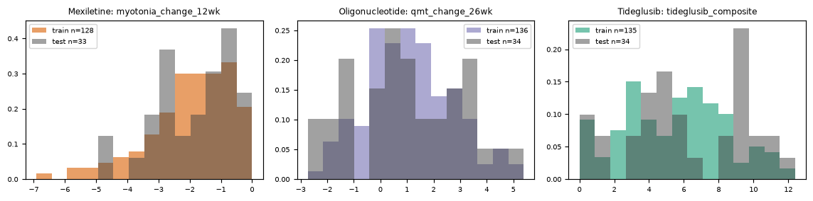

| Kickoff says | What we did | Where |
|---|---|---|
| Split each arm separately | Three independent 80/20 splits, one per arm | 2.1 |
| Stratify by outcome (responder label directly; continuous outcome binned first) | Stratified on the responder label; train vs test label share and continuous-outcome mean/SD shown | 2.1, 2.2 |
| Fix the random seed | Seed 42; the split file results/split_seed42.csv is read as given, nothing re-randomised | 2.1 |
| Lock the test set; use it only for the final evaluation | Test rows are first opened in Step 6; a lock file blocks re-scoring | 2.3 |
| (Step 5 / checklist) tuning on training data only | Repeated stratified 5-fold x3 CV inside TRAIN for every comparison; inner 3-fold grid search for tuned ML | 2.4 |
One split per arm, 80% train / 20% test, stratified on the responder label, random seed 42. The split is the project's single locked split file (results/split_seed42.csv, read-only); no new split was drawn and no alternative split was compared.
Set sizes and balance (outcome summaries of the test set are read from the locked scoring output, for balance only)
| Arm | Train n | Test n | Train / total | Responders train | Responders test | Outcome mean (SD) train | Outcome mean (SD) test |
|---|---|---|---|---|---|---|---|
| Mexiletine | 128 | 33 | 80% | 37 (28.9%) | 10 (30.3%) | -1.99 (1.36) | -1.82 (1.25) |
| Oligonucleotide | 136 | 34 | 80% | 56 (41.2%) | 14 (41.2%) | 1.08 (1.60) | 0.96 (2.07) |
| Tideglusib | 135 | 34 | 80% | 65 (48.1%) | 16 (47.1%) | 5.53 (3.01) | 6.14 (3.48) |

Stratification keeps the responder share of train and test within about one patient of each other (table). The continuous outcome was not used for stratification; its train and test distributions overlap as shown, but with 33-34 test patients small differences in mean and SD are expected.
The test rows are not used for exploration (Step 1), preprocessing (Step 3), selection (Step 4) or tuning (Step 5). They are opened once, in Step 6, in a single scoring pass. The guard file results/TEST_SCORED.lock records that pass (started 2026-10-12T23:21:03, finished 2026-10-12T23:23:44) and blocks a second scoring unless explicitly forced.
All model comparison and tuning uses repeated stratified 5-fold CV, 3 repeats, seed 42, on the training rows only, stratified on the responder label. The same folds are used for every method and for both outcome types, so methods are compared on the same patients. Tuned ML models additionally run an inner 3-fold grid search on each outer fold's training rows (nested), so a tuned model is never tuned on the fold that scores it. Every preprocessing step is re-fitted on each fold's training part (Step 3).
| Arm | Repeats x folds | Validation fold size | Fit size (train rows per fit) | Responder share per validation fold |
|---|---|---|---|---|
| Mexiletine | 3 x 5 = 15 fits per method | 25-26 | 102-103 | 27%-31% (train 29%) |
| Oligonucleotide | 3 x 5 = 15 fits per method | 27-28 | 108-109 | 41%-43% (train 41%) |
| Tideglusib | 3 x 5 = 15 fits per method | 27-27 | 108-108 | 48%-48% (train 48%) |
AI tool disclosure (kickoff checklist): Claude Code (Anthropic) was used to write the analysis code (R and Python), to generate these pages, and to draft the text; every number on these pages is read from results/*.csv produced by the scripts in pdf_pipeline/src. Data are simulated; results do not describe real patients or approved therapies.